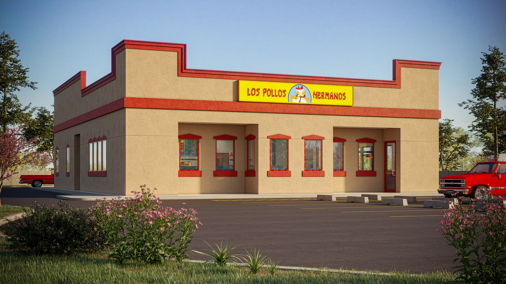

Meet Our Founder
Gustavo Fring owner and founder of Los Pollos Hermanos, got the idea from his uncles who worked hard perfecting their homestyle recipe for the most perfect chicken. Balancing the bread to chicken ratio, while introducing a flavorful array of spices that are sure to make your mouth water. Gustavo hopes to continue his uncles legacy by bringing this fantastic home-style recipe to you, with expanding locations all around the globe.
Locations
4257 Isleta Blvd SW, Albuquerque, New Mexico
400 South 300 East, Salt Lake City, Utah
2734 Pinehill Rd, Ogden, Utah
Our Restaurant
